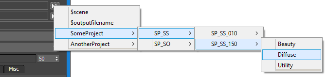

3ds Max - Integrated Submitter - Advanced Features¶
Sticky Settings And Defaults Management¶
The Integrated 3ds Max Submitter (SMTD) offers a sophisticated multi-stage system to determine the values of all settings related to the job submission. This system was updated significantly in Deadline 10 to allow per-scene-file settings storage.
Factory Default Value
All setting involved in the SMTD functionality are stored as properties of the global SMTDSettings struct.
Every property in the SMTDSettings struct has a default value hard-coded in the file SubmitMaxToDeadline_Functions.ms
When the SMTD backend functions are loaded (either by launching the SMTD UI, or by loading the file SubmitMaxToDeadline_Functions.ms via a 3rd party script), all settings are initialized to Factory Defaults.
Stickiness
A Sticky setting is a property that remembers the last value it was assigned via the SMTD UI, and restores that value to override the Factory Default.
Sticky settings use a local INI file associated with the user of the workstation to store and restore values. The exact path is accessible via the SMTDPaths.InIFile MAXScript property.
By default, every setting is assumed Sticky unless specified otherwise via one of the available methods:
The SMTDFunctions.getSettingsList() function returns an array of arrays that map to the properties of the SMTDSettings struct. Each sub-array defines the INI Category and Key name to use when reading and writing related INI files, some description info, and optional stickiness controls. The 7th element of the array controls whether to respect the Stickiness control files; the 8th element defines the default Stickiness. If these elements are undefined, they are assumed True, but can be set explicitly to True or False by Thinkbox developers. These definitions are considered Factory settings and should not be modified by the end users.
If the 7th element of the setting’s sub-array produces True, the property name is checked against the Repository file SubmitMaxToDeadline_StickySettings.ini.
If the file contains the respective key name in the specified category and the value is “false”, the setting is explicitly Not Sticky.
If the key value is anything but “false”, the setting is explicitly Sticky.
If the file does not contain the key, the Stickiness state from the previous step will persist.
The file SubmitMaxToDeadline_StickySettings.ini found in the Repository’s \submission\3dsmax\Main\ folder is checked for the property’s Sticky state.
If the file contains the respective key name in the specified category and the value is “false”, the setting is explicitly Not Sticky.
If the key value is anything but “false”, the setting is explicitly Sticky.
If the file does not contain the key, the Stickiness state from the previous steps will persist.
If a local copy of the file SubmitMaxToDeadline_StickySettings.ini is found in the user’s local settings folder, the same checks are performed on it.
If the file contains the respective key name in the specified category and the value is “false”, the setting is explicitly Not Sticky.
If the key value is anything but “false”, the setting is explicitly Sticky.
If the file does not contain the key, the Stickiness state from the previous steps will persist.
Stickiness Info In Tooltips
The tooltips of SMTD UI controls have been updated to show Stickiness information in addition to the *symbol next to the caption.
The note about *denoting non-sticky settings available in builds prior to Deadline 10 has been removed to reduce UI clutter.
Controls in the UI will still display the *symbol to denote the non-sticky status, but it applies only to new scenes.
Restoring Sticky Values
Each time a setting is changed via the SMTD UI, its value is written to a local user’s INI file.
If the previous steps determined a setting’s value is Sticky, the last recorded value (if any) will be loaded from the INI file.
If no such value is found, the Factory Value will persist.
Note that changes to properties are always recorded in the local INI file even when a setting is set to Non-Sticky.
This means that changing the Stickiness via the local or global SubmitMaxToDeadline_StickySettings.ini file would immediately make SMTD use the latest stored value.
A few settings which are expected to never be Sticky might not store any data in the local INI file though.
Assigning Global Defaults To Non-Sticky Values
If the setting was set to be Non-Sticky via INI file or factory definition, its value is looked for in the Repository’s SubmitMaxToDeadline_Defaults.ini file.
If the INI file does contain the property’s Category and Key, the value is read and assigned to the setting.
If the INI file does not contain the Category and Key, the Factory Default value will persist.
Loading Settings From Scene File
At this point, the Per-Scene Storage System introduced in Deadline 10 comes to play.
If there is a valid record of that setting in the current MAX scene, and the setting is not excluded from restoring via the Repository file SubmitMaxToDeadline_ExcludeFromSceneStorage.ini, the scene value will overwrite the last known value.
If there is no valid record of that setting in the current MAX scene, or the setting is excluded from restoring via the SubmitMaxToDeadline_ExcludeFromSceneStorage.ini Repository file, then nothing will change.
The following behaviors are possible:
The SMTD settings will be set from Factory Defaults, Global Defaults, and Sticky Settings like in previous versions of Deadline if you:
Launch a new 3ds Max session, start a New scene, or Reset the scene, and then open the SMTD UI,
Have the SMTD UI already open, and you start a New scene, or Reset the scene,
Load a MAX scene file that has not been saved while SMTD was open and thus contains no SMTD settings, and then open the SMTD UI.
If you open the SMTD UI, and then you load a MAX scene file that has not been saved while SMTD was open, the currently displayed SMTD settings will not be changed.
The SMTD settings not excluded from restoring will be loaded from the MAX scene file if you:
Load a MAX scene file that has been saved while the SMTD UI was open and thus contains valid SMTD settings, and then open the SMTD UI.
Open the SMTD UI, and then load a MAX scene file that has been saved while the SMTD UI was open and thus contains valid SMTD settings.
Defaults And Sticky Settings Browser
The previously available dialog has been enhanced with a column showing the Scene File Value, if any.
When a valid Scene File Value was found in the current scene, its value will be shown in the column and will cause the Final Value to change to it.
When a valid Scene File Value was not found, the symbol – will be shown instead.
When a setting is excluded from loading, it will be enclosed in parentheses. This includes both valid values, and the – placeholder.
In the above screenshot,
Green-Yellow background denotes properties that are Sticky By Default. This means that there was no additional controls in INI files are factory definitions changing the behavior of the property, so it will be stored on disk when changed via the UI, and restored when a new scene is started.
Green background denotes properties that have been flagged as Sticky via the Global SubmitMaxToDeadline_StickySettings.INI file in the Repository.
Purple background denotes properties that have been flagged as Not Sticky via the Global SubmitMaxToDeadline_StickySettings.INI file in the Repository.
Pink background denotes properties which have been hard-coded as Not Sticky via the definitions inside the SubmitMaxToDeadline_Functions.ms file.
Yellow background (not visible in the screenshot) denotes properties that have been hard-coded as Sticky via the definitions inside the SubmitMaxToDeadline_Functions.ms file.
Let’s look at one of these Properties - the UserOptions > PerformSanityCheck:
It is Sticky according to the Global INI file.
It starts with a Factory Default value of True.
It’s Global Default value would also set it to True if it were not Sticky,
But since it is Sticky, it reads the value from the local INI file and gets set to False.
The value stored in the MAX scene file would also set it to False,
However PerformSanityCheck is set to be excluded when restoring from the MAX scene file (to avoid turning off the Sanity Check between sessions). This is why the Scene File Value is in parentheses.
The Final Value shows that the Sanity Check will be off because the user had turned it off, and it sticks between sessions.
If the Deadline administrator of a company would like to enforce Sanity Checks to be run on each submission, he could edit the file SubmitMaxToDeadline_StickySettings.INI in the Repository, locate the category [UserOptions], and change the property to PerformSanityCheck=false
As result, the value of True defined via the global defaults in the file SubmitMaxToDeadline_Defaults.ini will be applied and will become the final value on all workstations, effectively enforcing a Sanity Check on every submission!
Advanced Features For Technical Directors¶
Custom Job Name Controls¶
There are two ways to customize the job name. You can use keys in the job name that are replaced with actual values (like $scene), or you can have the job name be generated from a list of shows, shots, etc. You will then be able to use the [>>] button to the right of the Job Name field to select these custom job names.
Generate Job Name From Keys
There is a file in the ..\submission\3dsmax\Main\ folder in your Repository called SubmitMaxToDeadline_NameFormats.ini. In addition, a local copy of the SubmitMaxToDeadline_NameFormats.ini file can be saved in a user’s application data folder. This file will OVERRIDE the name formats in the Repository and can contain a sub-set of the definitions in the global file. This file will contain some key-value pairs such as:
$scene=(getfilenamefile(maxfilename))
$date=((filterstring (localtime) " ")[1])
$deadlineusername=(SMTDFunctions.GetDeadlineUser())
$username=(sysInfo.username)
$maxversion=(((maxVersion())[1]/1000) as string)
The key to the left of = is the string that will be replaced in the job name. The value to the right of the = is the maxscript code that is executed to return the replacement string (note that the value returned must be returned as a string). So if you use $scene in your job name, it will be swapped out for the scene file name. You can append additional key-value pairs or modify the existing ones as you see fit.
By default, the [>>] button will already have $scene or $outputfilename as selectable options. You can then create an optional JobNames.ini file in the 3dsmax submission folder, with each line representing an option. For example:
$scene
$outputfilename
$scene_$camera_$username
$maxversion_$date
These options will then be available for selection in the submission dialog. This allows for all sorts of customization with regards to the job name.
Generate Job Name For Shows
This advanced feature allows the addition of custom project, sequence, shot and pass names to the [>>] list to the right of the Job Name field. Producers in larger facilities could provide full shot lists via a central set of files in the Repository to allow users to pick existing shot names and ensuring consistent naming conventions independent from the 3ds Max scene naming.
To create a new set of files, go to the ..\submission\3dsmax\Main\ folder in your Repository and create the following files:
Projects.ini - This file describes the projects currently available for Custom Job Naming. Each Project is defined as a Category inside this file, with two keys: Name and ShortName.
For example:
[SomeProject]
Name=Some Project in 3D
ShortName=SP
[AnotherProject]
Name=Another Project
ShortName=AP
SomeProject.ini - This is a file whose name should match exactly the Category name inside the file Projects.ini and contains the actual sequence, shot and pass description of the particular project. One file is expected for each project definition inside the Projects.ini file.
For example:
[SP_SS_010]
Beauty=true
Diffuse=true
Normals=true
ZDepth=true
Utility=true
[SP_SS_150]
Beauty=true
Diffuse=true
Utility=true
[SP_SO_020]
Beauty=true
[SP_SO_030]
Beauty=true
The Submitter will parse this file and try to collect the Sequences by matching the prefix of the shot names, for example in the above file, it will collect two sequences - SP_SS and SP_SO - and build a list of shots within each sequence, then also build a list of passes within each shot.
Then, when the [>>] button is pressed, the context menu will contain the name of each project and will provide a cascade of sub-menus for its sequences, shots and passes.
If you selected the entry SomeProject>SP_SS>SP_SS_150>Diffuse, the resulting Job Name will be “SP_SS_150_Diffuse”:

You can enter as many projects into your Projects.ini file as you want and provide one INI file for each project describing all its shots and passes. If an INI file is missing, no data will be displayed for that project.
Custom Comment Controls¶
Just like job names, you can use tokens in the comment field that are replaced with actual values (like $scene).
The file SubmitMaxToDeadline_CommentFormats.ini in the ..\submission\3dsmax\Main\ folder in your Repository provides the comment shown in the Comment’s [>>] menu.
In addition, a local copy of the SubmitMaxToDeadline_CommentFormats.ini file can be saved in the user’s application data folder stored in the property SMTDPaths.SettingsDir. For Deadline 10, the folder would be:
"C:\Users\(UserName)\AppData\Local\Thinkbox\Deadline<VERSION>\settings\"
Note
<VERSION> is the Deadline major version such as: 10.
The local file, if present, will OVERRIDE the comment formats in the Repository and can contain a sub-set of the definitions in the global file.
The global and local files can contain key-value pairs such as:
$default=("3ds Max " + SMTDFunctions.getMaxVersion() + " Scene Submission")
$scene=(getfilenamefile(maxfilename))
$date=((filterstring (localtime) " ")[1])
$deadlineusername=(SMTDFunctions.GetDeadlineUser())
$username=(sysInfo.username)
$maxversion=(((maxVersion())[1]/1000) as string)
The key to the left of = is the string that will be replaced in the comment. The value to the right of the = is the maxscript code that is executed to return the replacement string (note that the value returned must be returned as a string). So if you use $scene in your comment, it will be swapped out for the scene file name. You can append additional key-value pairs or modify the existing ones as you see fit.
The [>>] button will always contain the options “CLEAR Comment” and “RESET to $default”.
Starting with Deadline v10, the token definitions in the menu will have additive behavior, that is selecting an entry from the list other than CLEAR… or RESET… will append the token to the existing comment text without clearing it.
Custom Extra Info Controls¶
Just like job names and comments, you can use keys in the Extra Info 0-9 fields (under the ‘Misc’ tab in SMTD) that are replaced with actual values (like $scene). There is a file in the ..\submission\3dsmax\Main\ folder in your Repository called SubmitMaxToDeadline_ExtraInfoFormats.ini. In addition, a local copy of the SubmitMaxToDeadline_ExtraInfoFormats.ini file can be saved in a user’s application data folder. This file will OVERRIDE the comment formats in the Repository and can contain a sub-set of the definitions in the global file. This file will contain some key-value pairs such as:
$scene=(getfilenamefile(maxfilename))
$date=((filterstring (localtime) " ")[1])
$deadlineusername=(SMTDFunctions.GetDeadlineUser())
$username=(sysInfo.username)
$maxversion=(((maxVersion())[1]/1000) as string)
The key to the left of = is the string that will be replaced in the extra info field. The value to the right of the = is the maxscript code that is executed to return the replacement string (note that the value returned must be returned as a string). So if you use $scene in your extra info field, it will be swapped out for the scene file name. You can append additional key-value pairs or modify the existing ones as you see fit.
As an example, you may wish to use the automatic SMTD ‘BatchName’ functionality to group logical job submissions together in your Deadline queue, but also use custom Extra Info fields to help track pipeline information such as Project, Sequence, Shot or Job Number of a particular 3dsMax/Jigsaw/Draft/Quicktime job submission such as:
$project=[execute maxscript code here, returning a string value]
$sequence=123456
$shot=[use maxscript to get shot # from the current render output naming convention]
$jobnumber=[maxscript to query database and get project's job number as a string]
Once this additional ‘pipeline’ information is injected into your Deadline jobs, the Extra Info columns can be given user friendly names so that they can easily be identified and used to filter and sort jobs in the Monitor. See the Job Extra Properties section for more information. NOTE, the Extra Info X columns are also injected into the Completed Job Stats, thereby allowing you to store and later analyse/create reports against previous jobs by the data stored in your Extra Info X columns.
Custom Plugin.ini File Creation¶
This section covers the Alternate Plugin.ini feature in the 3ds Max Rendering rollout (under the Render tab).
Alternate Plugin.ini File
The plugin.ini list will show a list of alternative Plugin Configuration files located in the Repository. By default, there will be no alternative plugin.ini files defined in the repository. The list will show only one entry called [Default], which will cause all Workers to render using their own local plugin.ini configuration and is equivalent to having the Use Custom Plugin.ini file unchecked.
To define an alternative plugin.ini, copy a local configuration file from one of the Workers to [Repository]\plugins\3dsmax in the repository. Edit the name of the file by adding a description of it. For example, plugin_brazil.ini, plugin_vray.ini, plugin_fr.ini, plugin_mentalray.ini, etc. Open the file and edit its content to include the plugins you want and exclude the ones you don’t want to use in the specific case. The next time you launch Submit To Deadline, the list will show all alternative files whose names start with “plugin” and end with “.ini”. The list will be alphabetically sorted, with [Default] always on top. You can then select an alternative plugin.ini file manually from the list.
Pressing the Edit Plugin.ini File button will open the currently selected alternative configuration file in a MAXScript Editor window for quick browsing and editing, except when [Default] is selected. Pressing the Browse Directory button will open Windows Explorer, taking you directly to the plugins directory containing the alternative plugin.ini files. Note that if you create a new plugin.ini file, you will have to restart the Submit To Deadline script to update the list.
Since the alternative Plugin Configuration file is located in the Repository and will be used by all Worker machines, the plugin paths specified inside the alternative plugin.ini will be used as LOCAL paths by each Worker. There are two possible installation configurations that would work with alternative plugins (you could mix the two methods, but it’s not recommended):
Centralized Plugins Repository: In this case, all 3dsmax plugins used in the network are located at a centralized location, with all Workers mapping a drive letter to the central plugin location and loading the SAME copy of the plugin. In this case, the alternative plugin.ini should also specify the common drive letter of the plugin repository.
Local Plugin: To avoid slow 3dsmax booting in networks with heavy traffic, some studios (including ones we used to work for) deploy local versions of the plugins. Every Worker’s 3dsmax installation contains a full set of all necessary plugins (which could potentially be automatically synchronized to a central repository to keep all machines up-to-date). In this case, the alternative plugin.ini files should use the LOCAL drive letter of the 3dsmax installation, and all Workers’ 3dsmax copies MUST be installed on the same partition, or at least have the plugins directory on the same drive, for example, “C:”.
Auto-Detect Plugin.ini For Current Renderer
When enabled, the following operations will be performed:
When you check the checkbox, the current renderer assigned to the scene will be queried.
The first 3 characters of the renderer’s name will be compared to a list of known renderers.
If the renderer is not on the list, the alternative list will be reset to [Default].
If the renderer is the Default Scanline Renderer of 3dsmax, the alternative list will be reset to [Default].
If the renderer is a known renderer, the plugin*.ini file that matches its name will be selected.
Supported renderers for auto-suggesting an alternative configuration are:
Brazil plugin*.ini should contain “brazil” in its name (i.e.: plugin_brazil.ini, plugin-brazil.ini, pluginbrazil_1_2.ini etc).
Entropy plugin*.ini should contain “entropy” in its name (i.e.: plugin_entropy.ini, plugin-entropy.ini, pluginentropy.ini, etc).
finalRender plugin*.ini should contain “fr” or “final” in its name (i.e.: plugin_fr.ini, plugin-finalrender.ini, plugin_finalRender_Stage1.ini etc).
MaxMan plugin*.ini should contain “maxman” in its name (i.e.: plugin_maxman.ini, plugin-maxman.ini, pluginmaxman001.ini etc).
mentalRay plugin*.ini should contain “mr” or “mental” in its name (i.e.: plugin_mr.ini, plugin-mentalray.ini, plugin_mental33.ini etc).
V-Ray plugin*.ini should contain “vray” in its name (i.e.: plugin_vray.ini, plugin-vray.ini, pluginvray109.ini etc).
Notes:
You can override the automatic settings anytime by disabling the Auto-Detect option and selecting from the list manually.